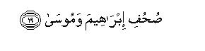

بسم الله الرحمن الرحيم
Sayyid Abul Ala Maududi - Tafhim al-Qur'an - The Meaning of the Qur'an
 87.
Surah Al Ala (The Most High)
87.
Surah Al Ala (The Most High)
The Surah takes its name from the word al-A`la in the very first verse.
The subject matter shows that this too is one of the earliest Surahs to be revealed, and the words: "We shall enable you to recite, then you shall never forget" of verse 6 also indicate that it was sent down in the period when the Holy Messenger (upon whom he Allah's peace) was not yet fully accustomed to receive Revelation and at the time Revelation came down he feared lest he should forget its words. If this verse is read along with verse 114 of Surah Ta Ha and verses 16-19 of Al-Qiyamah and the three verses are also considered with regard to their styles and contexts, the sequence of events seems to be that first in this Surah the Holy Prophet (upon whom be peace) was reassured to the effect: "Do not at all worry: We shall enable you to recite this Word, then you shall not forget it." Then after a lapse of time, on another occasion, when the Surah Al-Qiyamah was being revealed, the Holy Prophet involuntarily began to rehearse the words of the Revelation. Thereupon it was said: "O Prophet do not move your tongue to remember this Revelation hastily. It is for Us to have it remembered and read. Therefore when We are reciting it, listen to its recital carefully. Again, it is for Us to explain its meaning."Last of all, on the occasion of the revelation of Surah Ta Ha, the Holy Prophet on account of human weakness, again became afraid lest his memory should fail to preserve some portion of the 113 verses which were continuously revealed at that time, and therefore, he began to memorize them. Thereupon, it was said: "And see that you do not hasten to recite the Quran before its revelation is completed to you."After this, it never so happened that he felt any such danger, for apart form these three places, there is no other place in the Quran where there might be a reference to this matter.
This short surah contains three themes: Tauhid, instructions to the Holy Prophet (upon whom be peace) and the Hereafter.
In the first verse, the doctrine of Tauhid has been compressed into a single sentence, saying that Allah's name should be glorified and exalted, i. e. He should not be remembered by any name which mighty reflect a deficiency, fault, weakness, or an aspect of likeness, with created beings, for the root of all false creeds in the world are wrong concepts about Allah, which assumed the form of an erroneous name for His glorious and exalted Being. Therefore, for the correction of the creed, the primary thing is that Allah Almighty should be remembered only by the beautiful names which suit and befit Him.
In the next three verses, it has been said: "Your Lord, glorification of Whose name is being enjoined, is He Who created everything in the Universe, proportioned it, set it a destiny, taught it to perform the function for which it is created, and you witness this manifestation of His power day and night that He creates vegetation on the earth as well as reduces it to mere rubbish. No other being has the power to bring about spring nor the power to prevent autumn."
Then, in the following two verses, the Holy Prophet (upon whom be peace) his been consoled, as if to say: "Do not worry as to how you will remember word for word the Qur'an that is being revealed to you. It is for Us to preserve it in your memory, and its preservation is not in any way the result of any excellence in you but the result of Our bounty and favor, otherwise if We so will, We can cause you to forget it."
Then, the Holy Prophet (upon whom be peace) has been told: "You have not been made responsible to bring everyone on to the right path; your only duty is to convey the truth, and the simplest way of conveying the truth is that admonition be given to him who is inclined to listen to the admonition and accept it, and the one who is not inclined to it, should not be pursued. The one who fears the evil consequences of deviation and falsehood, will listen to the truth and accept it, and the wretched one who avoids listening to and accepting it, will himself see his evil end."'
The discourse has been summed up, saying: "Success is only for those who adopt purity of belief, morals and deed, and remember the name of their Lord and perform the Prayer. But, on the contrary, the people are wholly lost in seeking the ease, benefits and pleasures of the world, whereas they should actually endeavor for their well being in the Hereafter, for the world is transitory and the Hereafter everlasting and the blessings of the Hereafter are far better than the blessings of the world. This truth has not been expressed only in the Qur'an but in the books of the Prophets Abraham and Moses too, it had been brought to the notice of man.

In the name of Allah, the Compassionate, the Merciful.


[1-5] (O Prophet,) glorify the name of your Lord, the Highest.1 Who created and proportioned.2 Who set a destiny3 and showed the way.4 Who caused vegetation to grow,5 then reduced it to black rubbish.6
[6-7] We shall enable you to recite; then you shall not forget7 except what Allah wills.8 He knows what is open and also what is hidden.9
[8-13] And We give you the facility of the easy way; therefore, admonish them if admonition be profitable.10 He who fears will accept the admonition,11 and it will be shunned by the most wretched one, who shall enter the Great Fire, wherein he shall neither die nor live.12

[14-19] Truly successful was he who purified himself,13 and remembered the name of his Lord,14 then prayed.15 But you (O men,) prefer the life of this world,16 although the Hereafter is better and more lasting.17 The same had been said in the former Books, the Books of Abraham and Moses.18
1Literally: "Purify the name of your Lord, the Highest." This can have several meanings and all are implied:
(1) Allah should be remembered by the names which fit Him, and no such name should be used for His exalted Being which, with regard to its meaning and sense, does not fit Him, or which reflects some aspect of deficiency, lack of reverence, polytheism about Him, or which refers to some wrong belief in respect of His Being, attributes, or works. For this purpose, the safest way is that only such names be used for Allah, which He himself has mentioned in the Qur'an, or which are a correct translation of these names in other languages.
(2) Allah should not be remembered by the names as are used generally for the created beings, or the created beings should not be called by names as are specifically meant for Allah. And if there are some attributive names which are not specifically meant for Allah, but may also be used for the created beings, such as Ra'uf (Kind), Rahim (Compassionate), Karim (Generous), Sami` ( I Hearing), Basir (Seeing), etc. one should exercise due care not to use them for man as they are used for Allah.
(3) Allah should not be mentioned in a way or in a state which reflects lack of respect for Him; for example, to mention His name when engaged in mockery or jest, or when in the lavatory, or while committing a sinful act, or before the people who might behave insolently in response or in assemblies where the people are engaged in absurd things and might laugh off His mention, or on an occasion when it is feared that the hearer will hear it disdainfully. About Imam Malik, it is related that when a beggar begged him for something and he did not have anything to give, he would not turn away the beggar, saying that Allah would help him, as is commonly done by the people, but he would excuse himself in some other way. When asked why he did so, he replied: "When the beggar is not given anything and one makes an excuse, it inevitably displeases him. On such an occasion, I do not like to mention Allah's name, for I do not like that somebody should hear His name in a state of annoyance and displeasure."
In the Hadith, it has been reported from Hadrat `Uqbah bin `Amir Juhani that the Holy Prophet (upon whom be Allah's peace) had enjoined recitation of Subhana Rabbi yal-A Ya in the sajdah on the basis of this very verse, and the recitation of Subhana Rabbi yal-'Azim in ruku ` on the basis of the last verse of Surah AI-Waqi'ah, viz. Fa-sabhih bi-isrni-Rabbi-kal- Azim." (Musnad Ahmad, Abu Da'ud, lbn Majah, Ibn Hibban, Hakim, Ibn al-Mundhir).
2That is, He created everything, from the earth to the heavens, in the universe, and gave whatever he created the right proportion and balance and gave every creature the best conceivable form and shape. The same thing has been expressed in Surah As-Sajdah, thus: "Who gave everything He created the best form" (v. 7) Thus, the creation of everything in the world giving it due order and proportion, is an express sign of the truth that some Wise Designer is its Creator. Had the creation of the countless things in the universe been the result of a chance accident, or the work of many creators, there could be no order and balance, no beauty and inner coherence among the many things existing in the world.
3"Set a destiny": determined beforehand what would be the function of a certain thing in the world, and for that purpose what would be its size, its form and shape, its qualities, its place of location, and what opportunities and means should be provided for its survival, existence and functioning, when it should come into being, and when and how it should cease to be after completing its part of the work. Such a scheme for a thing is its "destiny" (taqdir). And this destiny Allah has set for everything in the universe and for the entire universe as a whole. This means that the creation has not come about without a pre-conceived plan, haphazardly, but for it the Creator had a full plan before Him, and everything is happening according to that plan. (For further explanation, see E.N.'s 13, 14 of Al-Hijr. E.N. 8 of AI-Furgan, E.N. 25 of AI-Qamar. E.N. 12 of 'Abasa).
4That is, nothing was just created and left to itself, but whatever was created to perform a certain function, it was also taught the method of performing that function. In other words, He is not merely the Creator but Guide too. He has taken the responsibility to give guidance to whatever He has created in a particular capacity to fit its nature and to guide it in the way suitable for it. One kind of guidance is for the earth, the moon, the sun, and the stars and planets, which they are following in performing their role. Another kind of guidance is for water, air, light and the solid and mineral elements, and they are performing the same services for which they have been created accordingly. Still another kind of guidance is for vegetables, according to which they take root and spread in the earth, sprout up from its layers, obtain food from wherever Allah has created it for thetas, produce stem, branches, leaves, blossom and fruit, and fulfill the function which has been appointed for each of them. Still another kind of guidance is for the countless species of animals of the land, and water, and for each member of the species, the wonderful manifestations of which are clearly visible in the life of the animals and in their works, so much so that even an atheist is compelled to concede that different kinds of animals possess some sort of inspirational knowledge which man cannot obtain even through his instruments, not to speak of his senses. Then, there are two different kinds of guidance for man, which correspond to his two different capacities. One kind of guidance is for his animal life, by which each child learns to suck milk spontaneously on birth, by which the eyes of man, his nose, ear, heart, brain, lungs, kidney, liver, stomach, intestines, nerves, veins and arteries, all are performing their respective functions, without man's being conscious of it, or his will having anything to do with the functions of these organs. This is the guidance under which all physical and mental changes pertaining to childhood, maturity, youth and old age go on taking place in man, independent of his will, choice, even his consciousness. The second kind of guidance is for his intellectual and conscious life, the nature of which is absolutely different from the guidance for unconscious life, for in this sphere of life a kind of freedom has been transferred to man, for which the mode of guidance meant for voluntary life is not suitable. For turning away from this last kind of guidance, man may offer whatever arguments and excuses he may like, it is not credible that the Creator Who has arranged guidance for everything in this universe according to its capacity, might have set for man the destiny that he may appropriate numerous things in His world freely, but might not have made any arrangement to show what is the right way of using his choice and what is the wrong way. (For further explanation, see E.N.'s 9, 10, 14, 56 of An-Nahl, E.N. 23 of Ta Ha, E.N.'s 2, 3 of Ar-Rahman, E.N. 5 of Ad-Dahr)
5The word mar`a as used in the Text means the fodder for animals but the context shows that here it does not imply mere fodder but every kind of vegetation that grows out of the soil.
6That is, "He does not only bring about spring but autumn as well. You witness both the manifestations of this power. On the one side, He causes lush green vegetation to grow, the freshness of which pleases the hearts and, on the other, He renders the same vegetation pale, dry and black rubbish, which is blown about by winds and swept away by floods. Therefore, no one here should be involved in the misunderstanding that he will only experience spring and will never see autumn." This same theme has been expressed at several other places in the Qur'an in other ways. For example see Yunus: 24, Al-Kahf: 45, Al-Hadid: 20.
7Hakim has related from Hadrat Sa'd bin Abi Waqqas and Ibn Marduyah from Hadrat 'Abdullah bin 'Abbas that the Holy Prophet (upon whom be peace) repeated the words of the Qur'an for fear lest he should forget them. Mujahid and Kalbi say that even before Gabriel finished recitation of the Revelation the Holy Prophet would start repeating the initial verses lest he should forget them. On this very basis Allah assured him that he should listen quietly when the Revelation was coming down, for, "We shall enable you to recite it; then you will remember it for ever. You should have no fear that you will forget any word of it. " This is the third occasion where the Holy Prophet (upon whom be peace) has been taught the method of receiving the Revelation. The first two occasions have been referred to in Ta Ha: 114 and Al-Qiyamah: 16-19 above. This verse proves that just as the Qur'an was sent down to the Holy Prophet as a miracle, so also its each word was preserved in his memory as a miracle and no possibility was allowed to remain that he should forget anything of it, or that he should utter another synonymous word for any word of it.
8This sentence can have two meanings: first, "that the preservation of the entire Qur'an word for word in your memory is not a manifestation of your own power but the result of Allah Almighty's bounty and grace; otherwise if Allah so willed, He could cause it to be forgotten. " This same theme has been expressed at another place in the Qur'an, thus: "O Muhammad! We may, if We so will, take back from you all of what We have revealed to you." (Bani Isra'il: 86). Another meaning also can be: "Your forgetting something temporarily, or your forgetting a verse or a word occasionally is an exception froth this promise. What has been promised is: `You will not forget any word of the Qur'an permanently'." This meaning is confirmed by the following tradition of Bukhari: Once while leading the Fajr Prayer the Holy Prophet (upon whom be peace) happened to omit a verse during the recitation. After the Prayer hadrat Ubayy bin Ka`b asked if the verse had been abrogated. The Holy Prophet replied that he had forgotten to recite it.
9Although the words are general, and they mean that Allah knows everything, whether it is open or hidden, yet in the context in which they occur, they seem to mean: "O Prophet, your reciting the Qur'an along with Gabriel (peace be on him) is known to Allah and your fear for which you do so is also in Allah's knowledge." Therefore, the Holy Prophet is being assured that he will not forget it.
10Generally, the commentators take these as two separate sentences. They interpret the first sentence to mean: "We are giving you a simple code of law, which is easy to practice and act upon", and the second sentence to mean: "Admonish the people if admonishing be useful. " but in our opinion, the word "fa-dhakkir" connects the two sentences in meaning, and the theme of the second sentence bears upon the theme of the first sentence. Therefore, we interpret these sentences to mean: "O Prophet! We do not want to put you to any hardship concerning the preaching of Islam by demanding that you should snake the deaf to hear and the blind to see the way, but We have appointed an easy way for you, which is this: Give admonition when you feel that the people are inclined to benefit by it. As to who is inclined to benefit by the admonition and who is not, this you can only know through general preaching. Therefore, you should continue your general preaching, but your object should be to search out those from among the people who will benefit by it and adopt the right way. Such people alone are worthy of your attention and you should pay full attention only to their instruction and training. You need not abandon them and pursue those about whom you find by experience that they are not inclined to accept any admonition." Almost this very theme has been expressed in Surah 'Abasa in another way, thus: "As for him who is indifferent, to him you attend, though you would not be responsible if he does not reform. And the one who comes to you running, of his own will and fears, from him you turn away. By no means: This is but an Admonition. Let him who wills, accept it." (vv. 5-12).
11That is, only the one who has fear of God and of evil consequences, will consider whether or not he is following a wrong way, and he only will heed the admonition of the Servant of Allah who is distinguishing guidance from misguidance for him and guiding him to true successes and piety.
12That is, "He will neither die so as to escape the punishment nor live as one truly lives so as to enjoy the pleasures of life." This punishment is for those who do not at all accept the admonition of Allah and His Messenger and persist in disbelief, polytheism and atheism till death. As for those who believe in their hearts but are cast into Hell because of their evil deeds, it has been said in the Hadid that when they will have undergone their punishment, Allah will give them death; then intercession on their behalf will be accepted, and their scorched bodies will be brought to the canals of Paradise, and the dwellers of Paradise will be asked to sprinkle water on them; then by that water they will come to life even as vegetation grows up when water is sprinkled on the earth. This theme has been reported from the Holy Prophet (upon whom be peace) in Muslim on the authority of Hadrat Abu Sa`id Khudri and in Bazzar on the authority of Hadrat Abu Hurairah.
13"Who purified himself": who affirmed the faith giving up disbelief and polytheism, adopted good morals giving up evil morals, and performed good deeds giving up evil deeds. Success does not imply worldly prosperity, but true and real success whether worldly prosperity accompanies it or not. (For explanation, see E.N. 23 of Yunus, E.N.'s 1, I 1-50 of Al-Mu'minun, E.N. 4 of Luqman).
14To remember Allah signifies His remembrance in the heart as well as with the tongue.
15That is, he did not remain content only with remembering Allah but proved by performing the Prayer that he is practically also prepared to obey God in Whom he has affirmed the faith, and will remember His name as long as he lives. In this verse mention has been made of two things respectively: first, to remember Allah, then to perform the Prayer. Accordingly, the method enjoined is that the Prayer be begun with Allahu Akbar. This is an evidence to prove that all the elements of the procedure that the Holy Prophet (upon whom be peace) has taught of performing the Prayer, are based on the allusions in the Qur'an. But, no one else, apart from the Messenger of Allah, could by combining these injunctions and allusions give the Prayer the form that it has.
16That is, "O man, all your thoughts and endeavors are only for the world, its ease and comforts, its benefits and enjoyments. You regard whatever you gain here as the real gain and whatever you lose here as your real loss"
17That is, the Hereafter is preferable to the world for two reasons: first, that its comforts and pleasures are far superior to all the blessings of the world; second, that the world is transitory and the Hereafter everlasting.
18This is the second place in the Qur'an where reference has been made to the teachings of the Books of the Prophets Abraham and Moses. The first reference was trade in section 3 of Surah An-Najm above.